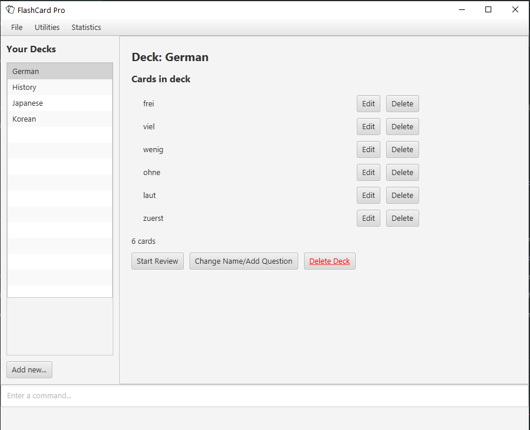

By: Team F09-02 Since: Aug 2019 Licence: MIT
- 1. Introduction
- 2. What is a flashcard?
- 3. Interacting with flashcards
- 4. Quick Start
- 5. Features
- 5.1. Show help page for commands available :
help - 5.2. Importing flashcards from disk :
import - 5.3. Exporting flashcards to disk:
export - 5.4. Viewing flashcards in library:
view - 5.5. Create new empty deck:
create - 5.6. Add new Front Back card or Multiple Choice Card to deck:
add - 5.7. Add new Javascript card or Java Card
- 5.8. Editing the card of an existing deck of flashcards :
edit - 5.9. Delete the card of an existing deck of flashcards :
delete - 5.10. Undo the last alteration to a deck :
undo - 5.11. Redoes the last undo :
redo - 5.12. Start test with flashcards :
test - 5.13. Viewing user statistics :
stats - 5.14. Quit FlashCard Pro :
quit
- 5.1. Show help page for commands available :
- 6. FAQ
- 7. Command Summary
1. Introduction
FlashCard Pro is an application designed for students who prefer to use a desktop app for managing flashcards. It is also useful for teachers who would like to provide resources, in the form of custom flashcard decks, to support their students’ learning.
FlashCard Pro is optimised for users who are comfortable with Command Line Interface-based interaction, allowing them to work more efficiently than with traditional Graphical User Interface (GUI)-based flashcard apps, while still being able to use their flashcards in a familiar GUI format.
2. What is a flashcard?
Flashcards are containers for information. Each card has a “front” and a “back”. One recommended use case is such: the user stores a question on the “front” of the card, and the answer on the “back”.
3. Interacting with flashcards
After sets of flashcards (known as “decks”) have been created, the user can interact with the flashcards in various ways. For example, they may test themselves on the content of the decks via timed and untimed tests. For ordinary cards with a front and back, the user can gauge their own understanding of the material by pressing either the "I got it right!" or "I got it wrong :(" buttons on the back of the flashcard.
Other types of flashcards support more advanced interactions. Cards with multiple choices for their answers will prompt the user to select an answer, and the app will automatically determine if the answer is correct.
At the end of each test, FlashCard Pro will provide the user with a score. Comprehensive statistics on the user’s test sessions and login sessions are recorded, which can be accessed via the Statistics menu in FlashCard Pro. The user may use these statistics to assess the frequency of their usage and their performance over time. Statistics are also provided on each card in a deck, so that the user can identify specific cards they may have problems with [coming in v2.0].
As with physical flashcards, the flashcards in FlashCard Pro can be shuffled, used in reverse, mixed between decks, etc [coming in v2.0]. Unlike physical flashcards, flashcards in FlashCard Pro are dynamic, offering a range of possibilities from traditional memorisation-type uses, to support for learning programming.
With FlashCard Pro’s Java and JavaScript cards, teachers can define basic coding problems for their students. Based on the test cases provided by the teachers, FlashCard Pro will evaluate the output of the student’s solution, allowing students to gauge their own coding knowledge, and teachers to evaluate their students’ progress. Test decks can be passed easily from student to teacher, as they are stored in convenient, lightweight JSON files which can be imported or exported natively in FlashCard Pro.
4. Quick Start
-
Ensure you have Java
11or above installed in your Computer. -
Download the latest
FlashCardPro.jarhere. -
Copy the file to the folder you want to use as the home folder for your Address Book.
-
Double-click the file to start the app. The GUI should appear in a few seconds.
 -
Refer to Section 5, “Features” for details of each command.
5. Features
Command Format
-
Words in
UPPER_CASEare the parameters to be supplied by the user. -
Items in square brackets are optional.
-
Items with
…after them can be used multiple times including zero times. -
Commands are case-sensitive.
Command History
-
After keying in a command, press up and down arrow keys to navigate your command history.
-
If in multiline editing mode, press (Ctrl+d) to submit the multiline text
5.1. Show help page for commands available : help
Shows the help page and guides you through the available commands for FlashCard Pro. You can also choose a specific command to look up how to use it
Format: help [command/COMMAND_NAME]
Examples:
-
help
Displays the User Guide for reference in FlashCard Pro.
-
help command/view
Displays the syntax to use command view.
5.2. Importing flashcards from disk : import
Adds a deck of flashcards from a JSON file path to FlashCard Pro’s library
Format: import filepath/FILE_NAME
|
You are advised to save your FlashCard Pro decks of flashcards in a folder that is separate from your files. |
FlashCard Pro recommends createing a folder in desktop named flashcardpro.
Examples:
-
import filepath/C:\Users\user\Desktop\flashcardpro\german.json
Importing the JSON file german.json file from a Windows OS file path.
5.3. Exporting flashcards to disk: export
Saves the deck of flashcards to a JSON file in the specified file path
Format: export deck/DECK_NAME
Examples:
-
export deck/german
Exports a deck named german in FlashCard Pro library to a JSON file named german.json
You can share the deck of cards in the JSON file saved to another user to use in FlashCard Pro via the import function.+
Refer to Section 5.2, “Importing flashcards from disk : import” for steps.
|
|
You are advised to save your FlashCard Pro decks of flashcards in a folder that is separate from your files. FlashCard Pro recommends createing a folder in desktop named flashcardpro.
|
5.4. Viewing flashcards in library: view
View the flashcard decks or the individual flashcards in a specific deck
Format: view [deck/DECK_NAME]
Examples:
-
view
Displays all the decks of cards in the library
-
view deck/science_deck
Displays all the cards in the deck of cards, science_deck
5.5. Create new empty deck: create
Creates an empty deck in FlashCard Pro library.
Format: `create deck/DECK_NAME.
Note :
Examples:
-
create deck/german
Creates a new empty deck named german.
5.6. Add new Front Back card or Multiple Choice Card to deck: add
Creates an Front Back card or Multiple Choice Card in a deck of FlashCard Pro library.
Format: create deck/DECK_NAME [priority/PRIORITY_LEVEL] front/FRONT_TEXT back/BACK_TEXT [choice/CHOICE_TEXT]…
Examples:
-
add deck/german front/hello back/moin moin
Creates a new Front Back card in deck german.
-
add deck/german front/hello back/1 choice/hello choice/bye choice/zzz
Creates a new Multiple Choice card in deck german, with the answer as the first choice/ parameter, hello.
5.8. Editing the card of an existing deck of flashcards : edit
The edit command allows the user to edit flashcards in any existing deck.
Format: edit deck/DECK_NAME index/CARD_INDEX [front/FRONT_TEXT] [back/BACK_TEXT] [choiceIndex/CHOICE_INDEX] [choice/CHOICE_TEXT]
Note:
Examples:
-
edit deck/science_deck index/1 front/what is a cell back/a cell is a building block
Edits the first flashcard of the deck science_deck
-
edit deck/science_deck index/1 choiceIndex/3 choice/Hello
Edits the first Multiple Choice flashcard of the deck science_deck, edit 3rd choice to hello.
5.9. Delete the card of an existing deck of flashcards : delete
Deletes a card from an existing deck in FlashCard Pro.
Format: delete deck/DECK_NAME index/INDEX
Example:
-
delete deck/german index/1
Deletes the first card of the deck german.
5.10. Undo the last alteration to a deck : undo
This allows you to undo any changed you may have made to any deck. This includes the creation of a new deck, the addition/edit of any cards and the deletion of cards or decks.
Format: undo
Example:
-
undo
5.11. Redoes the last undo : redo
This allows you to redo any undo that you had previously done. Please note that any alteration of a recovered deck from an Undo command will also reset the Redo history.
Format: redo
Example:
-
redo
5.12. Start test with flashcards : test
5.12.1. Get next card: next
Gets the next card in the test deck.
If there are no more cards, will trigger a popup with test results.
5.12.2. Get previous card: prev
Gets the previous card in the test deck.
5.12.3. Quit test: exit
Exits the test process when the user is in test mode.
Exams will also terminate automatically upon running out of cards in the test deck.
Triggers a popup with the results of the test.
Do note that premature ending of a test will still count towards your Statistics.
5.12.4. Front-Back Cards: front, back, correct, wrong
-
Users should look at the question on the front of the card and think of their answer.
-
Once they have their answer, they can type
backto view the answer on the back on the card. -
They will then be able to type
correctorwrongto count their results. -
They can type
frontwhen they are on the card back to relook at the question.
5.12.5. Multiple Choice Cards: <INDEX_OF_CORRECT_ANSWER>, front
-
Upon loading the card, users will be presented with the question and several choices.
-
Users will be able to key in their choice into the command bar, with the top most option as 1 and increasing downwards. Do note only numbers are accepted.
-
Keying in the answer will automatically flip the card and evaluate the answer. Users can then use
frontto relook at the question.
5.12.6. Java/Javascript Cards: code
-
Upon loading the card, users will be presented with a coding question.
-
They can then type
codeto launch the appropriate Java/Javascript coding playground to code their programs. -
Upon running their programs, if they pass all test cases, their results will automatically be counted.
5.13. Viewing user statistics : stats
Opens a new window to shows your usage statistics, such as time spent and list of login sessions over time. A quick summary of the decks, showing the number of cards, number of test sessions and average score, is also provided for reference.
You can also open the statistics window by clicking Statistics > View my statistics in the menu bar of the app.
|
| Upon your first login, you will see that the list of login sessions is blank and the number of login sessions is 0. :) A login session refers to the duration between when you launch the app and when you close it. Try opening and closing the app several times! |
Statistics on specific decks, such as the list of test sessions involving the deck and their results, can be accessed via stats deck/deck_NAME, or by double-clicking on the row representing the deck in the table titled "My statistics by deck".
Statistics on specific cards within a deck, which will allow you to review your understanding of individual concepts, are coming in v2.0.
Format: stats [deck/DECK_NAME]
Examples:
-
stats
Displays an overview of your statistics, grouped by your login sessions and statistics specific to each deck. -
stats deck/science_deck
Displays the overview of time spent reviewing the deckscience_deck, as well as the list of test sessions involving the deck and their results.
6. FAQ
Q: How do I transfer my data to another computer?
A: Install the app in the other computer. Copy the JSON files of any decks you would like to transfer into the data folder of the app.
Q: I accidentally deleted a deck! What can I do now?
A: You can just use the Undo command to recover the lost deck!
Q: How many times can I use the Undo command sequentially?
A: The Undo command can be used to undo all deck alterations for this session. However, if you quit out of the app and reopen it, you will erase your history of Undos!
Q: If I use Undo and make changes to an old version of a deck, will redo recover my original deck before the Undo command?
A: Unfortunately, the original deck before the Undo is unrecoverable. As such, please be mindful of making any changes to a recovered deck as this will erase any version of decks before the Undo!
7. Command Summary
-
help
help [command/COMMAND_NAME]
e.g.helpe.g.help command/view -
import :
import filepath/FILE_NAME -
export :
export deck/DECK_NAME FILE_NAME -
view :
view [deck/DECK_NAME]
e.g.view deck/science_deck -
create :
create deck/DECK_NAME -
add - only applicable for Front-Back Cards and Multiple Choice Cards
-
add FrontBack:
add deck/DECK_NAME front/CARD_FRONT back/CARD_BACK [priority/HIGH_OR_LOW] -
add MCQ:
add deck/DECK_NAME front/CARD_FRONT back/INDEX_OF_CORRECT_OPTION choice/CHOICE_A choice/CHOICE_B [priority/HIGH_OR_LOW]
-
edit - only applicable for Front-Back Cards and Multiple Choice Cards
-
edit deck/DECK_NAME index/CARD_INDEX [front/NEW_FRONT_TEXT] [back/NEW_BACK_TEXT] [choiceIndex/CHOICE_INDEX] [choice/CHOICE_TEXT] -
e.g.
edit deck/science_deck action/edit index/1 front/what is a cell back/a cell is a building block -
undo :
undo -
redo :
redo -
test :
test deck/DECK_NAME duration/TIME_LIMIT_ALLOWED
e.g.test deck/science_deck duration/0
e.g.test deck/science_deck duration/100
-
While in TEST_MODE:
-
next card:
next -
previous card:
prev -
exit test mode:
exit
-
-
TEST_MODE: Front Back Cards:
-
see back of card:
back -
correct answer:
correct -
wrong answer:
wrong -
see question:
front
-
-
TEST_MODE: Multiple Choice Cards:
-
indicate choice:
<INDEX_OF_CORRECT_ANSWER>which must be a positive integer between 1 and the total number of choices -
see question:
front
-
-
TEST_MODE: Java/Javascript Cards:
-
open coding playground:
code
-
-
stats :
stats [deck/DECK_NAME]
e.g.stats deck/science_deck -
quit :
quit